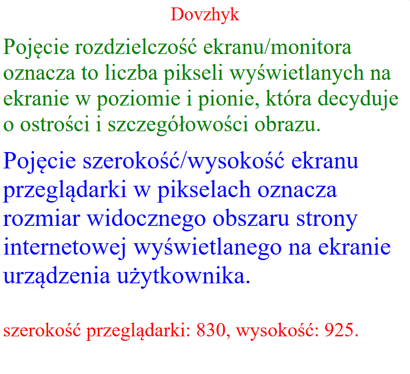
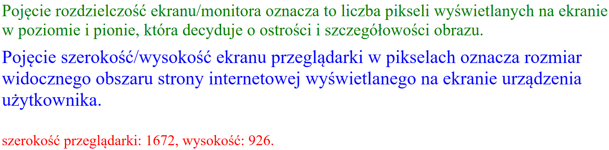

<!DOCTYPE html> <html lang="pl"> <head> <meta charset="UTF-8"> <meta name="viewport" content="width=device-width, initial-scale=1.0"> <title>Pisarski Z38</title> <style> #demo_pisarski { color: red; font-size: 40px; } </style> </head> <p id="demo_pisarski"></p> <script> var w = window.innerWidth; var h = window.innerHeight; var x = document.getElementById("demo_pisarski"); x = "szerokość przeglądarki: " + w + ", wysokość: " + h + "."; </script> <body> <div style="text-align:center; font-size: 10mm; color:red;">Pisarski</div><br> <div style="font-size: 12mm; color:green;"> Pojęcie rozdzielczość ekranu/monitora oznacza to liczba pikseli wyświetlanych na ekranie w poziomie i pionie, która decyduje o ostrości i szczegółowości obrazu. </div><br> <div style="font-size: 50px; color:blue;"> Pojęcie szerokość/wysokość ekranu przeglądarki w pikselach oznacza rozmiar widocznego obszaru strony internetowej wyświetlanego na ekranie urządzenia użytkownika. </div><br> <script> document.write("<font color=silver size=7>Twoja rozdzielczość ekranu to:</font>"); document.write("<font color=silver size=7>"+screen.width+"</font>"); document.write("<font color=silver size=7> na </font>"); document.write("<font color=silver size=7>"+screen.height+"</font>"); </script> <p id="demo_pisarski"> <script> document.write(x); </script> </p> <p></p><br> <p></p><br> </body> </html>